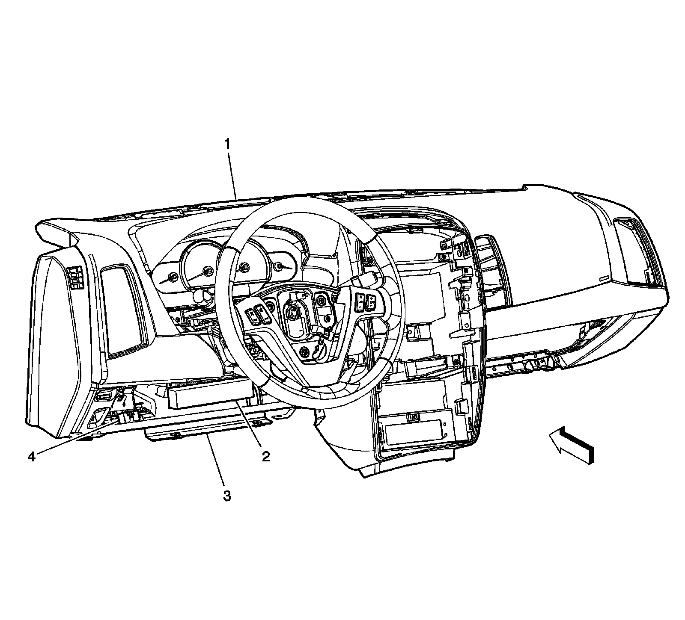
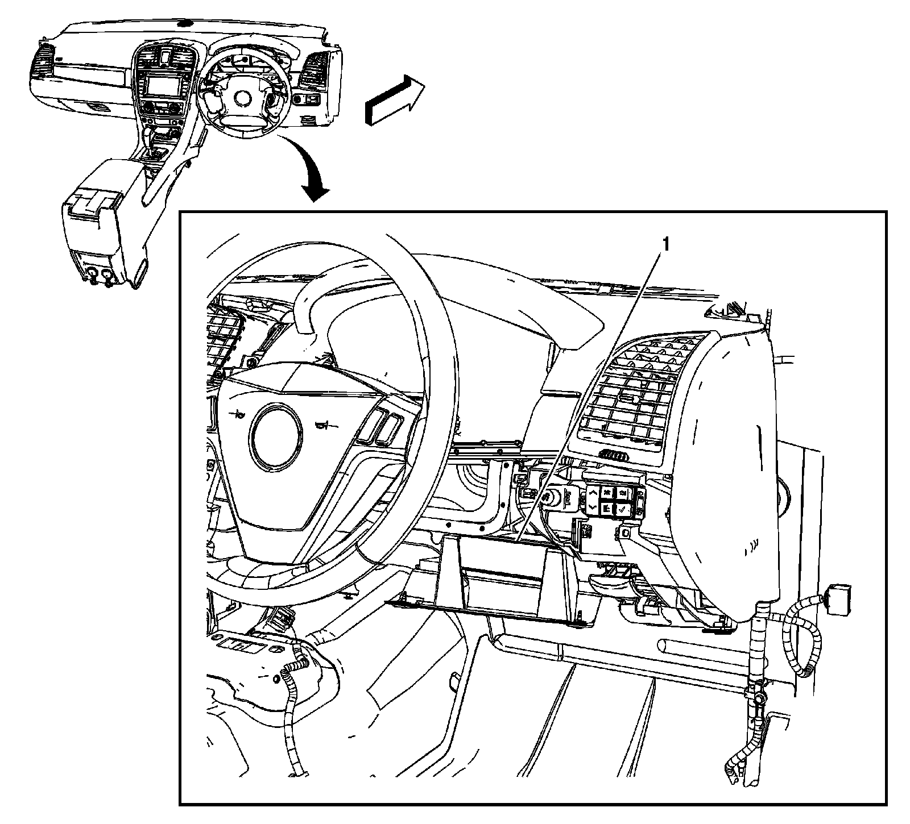
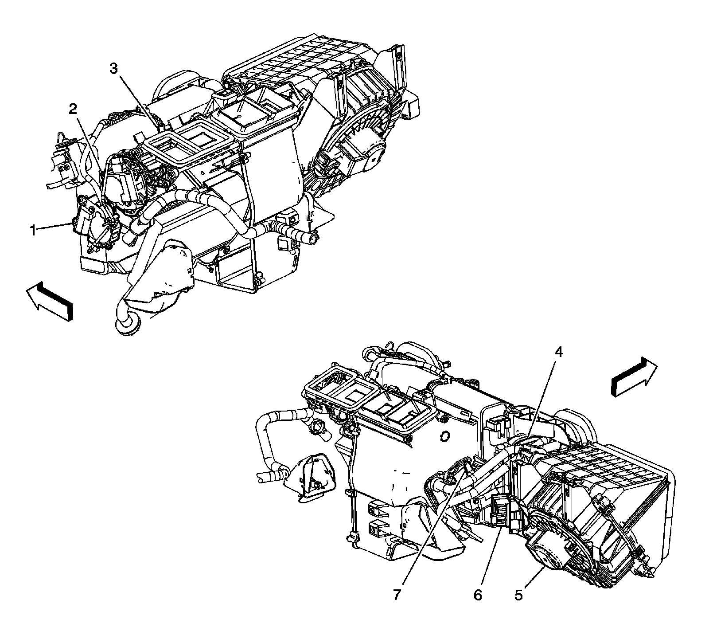

Instrument Panel/Center Console Component Views
Instrument Panel/Center Console Component Views
Instrument Panel and Floor Console Components (LHD)

1 - Driver Information Center (DIC) Switch
2 - Dimmer Switch
3 - Turn Signal/Multifunction Switch
4 - Inflatable Restraint Steering Wheel Module
5 - Instrument Panel Cluster (IPC)
6 - Windshield Wiper/Washer Switch
7 - Sunload/Ambient Light Sensor
8 - Speaker - Instrument Panel (UQS)
9 - Analog Clock
10 - Radio/CD/DVD/Navigation Unit (UV2)
11 - Inflatable Restraint I/P Module
12 - HVAC Control Module
13 - Rear Window Defogger Switch
14 - Courtesy Lamp - Right Footwell
15 - Hazard Switch
16 - Tow/Haul Switch
17 - Cigar Lighter
18 - Rear Video Display (U42)
19 - DVD Player (U42)
20 - Speaker - Center Console (UQS)
21 - Auxiliary Power Outlet - Center Console 2 (UQS)
22 - Auxiliary Power Outlet - Center Console 1
23 - Floor Console
24 - Inflatable Restraint I/P Module Indicator (AQS)
25 - Traction Control Switch
26 - Inside Air Temperature Sensor
27 - Steering Wheel Controls - Right
28 - Courtesy Lamp - Left Footwell
29 - Steering Wheel Controls - Left
Instrument Panel and Floor Console Components (RHD)

1 - Inflatable Restraint I/P Module
2 - Analog Clock
3 - Sunload/Ambient Light Sensor
4 - Speaker - Front Midrange (UQS)
5 - Turn Signal/Multifunction Switch
6 - Instrument Panel Cluster (IPC)
7 - Inflatable Restraint Steering Wheel Module
8 - Windshield Wiper/Washer Switch
9 - Dimmer Switch
10 - Driver Information Center (DIC) Switch
11 - Data Link Connector (DLC)
12 - Courtesy Lamp - Right Footwell
13 - HVAC Control Module
14 - Inside Air Temperature Sensor
15 - Traction Control Switch
16 - Cigar Lighter
17 - Inflatable Restraint I/P Module Indicator
18 - Auxiliary Power Outlet - Center Console 1
19 - Auxiliary Power Outlet - Center Console 2 (UQS)
20 - Speaker - Center Console (UQS)
21 - Rear Video Display (U42)
22 - Tow/Haul Switch
23 - Hazard Switch
24 - Rear Window Defogger Switch
25 - Courtesy Lamp - Right Footwell
26 - Radio/CD/DVD/Navigation Unit
Park Brake Switch, Brake Pedal and Accelerator Pedal Position Sensors (LHD)
Pedal Switches and Sensors:

1 - Park Brake Switch
2 - Brake Pedal Position Sensor
3 - Accelerator Pedal Position (APP) Sensor
4 - Left Front Floor Panel
Adjustable Pedal Position Sensors and Motors (JF4) - (LHD)

1 - Adjustable Brake Pedal Position Sensor Connector (JF4)
2 - Adjustable Pedal Motor (JF4)
3 - Adjustable Accelerator Pedal Position Sensor (JF4)
4 - Accelerator Pedal Position (APP) Sensor (JF4)
5 - Adjustable Brake Pedal Position Sensor (JF4)
6 - Park Brake Switch
Park Brake, Brake Fluid Level Switches and Pedal Position Sensors (LHD)
Brake And Brake Fluid Level Switches:

1 - Brake Fluid Reservoir
2 - Brake Fluid Level Switch
3 - Brake Fluid Level Switch Connector
4 - Adjustable Brake Pedal Position Sensor Connector (JF4)
5 - Adjust Pedal Motor (JF4)
6 - Adjustable Accelerator Pedal Position Sensor (JF4)
7 - Accelerator Pedal Position (APP) Sensor (JF4)
8 - Adjustable Brake Pedal Position Sensor (JF4)
9 - Park Brake Switch
Park Brake, Brake Fluid Level Switches and Pedal Position Sensors (RHD)
Hydraulic Brake Components:

1 - Brake Fluid Reservoir
2 - Brake Fluid Level Switch
3 - Adjustable Accelerator Pedal Position Sensor (JF4)
4 - Adjustable Pedal Motor (JF4)
5 - Accelerator Pedal Position (APP) Sensor
6 - Park Brake Switch
7 - Adjustable Brake Pedal Position Sensor (JF4)
Data Link Connector and Body Control Module (BCM) - (LHD)

1 - Instrument Panel
2 - Body Control Module (BCM)
3 - Insulator
4 - Data Link Connector (DLC)
Body Control Module (BCM) - (RHD)

1 - Body Control Module (BCM)
Steering Column Components 1 of 2

1 - Ignition Lock Cylinder Case
2 - Theft Detterent Module (TDM)
3 - Ignition Lock Cylinder Solenoid
Steering Column Components 2 of 2

1 - Inflatable Restraint Steering Wheel Module Coil
2 - Horn Contact Switch
3 - Adjustable Pedal Switch (JF4)
4 - Steering Angle Sensor
HVAC Module Components

1 - Air Temperature Actuator - Left
2 - Mode Actuator
3 - Evaporative Temperature Sensor
4 - Recirculation Actuator
5 - Blower Motor
6 - Blower Motor Control Module
7 - Air Temperature Actuator - Right